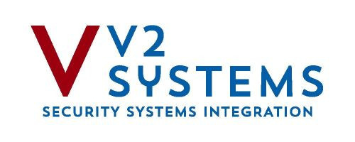

Professionalize the back office before growth makes the manual work permanent.
V2 Systems has already built a $20-25M commercial security integration business. The next step is moving QuickBooks, Excel, Google Calendar, third-party GPS, and manufacturer portals into a cleaner operating motion for service, projects, RMR, and field execution.
A Boston-based commercial security integrator with complex customers and a lean operating team.
Commercial security focus
V2 designs, installs, and services telecommunications, video surveillance, access control, and integrated technology solutions across New England.
Enterprise-grade customers
Keith described a customer base spanning global pharmaceutical, finance, commercial real estate, and mixed-use accounts.
PSA buying group member
V2 is a long-standing PSA buying group member and uses PSA, ADI, Wesco, and ScanSource as important distribution sources.
The company is outgrowing a workflow that depends on heroic manual follow-through.
Keith said the business is hitting the five-year mark and needs to get more professional. That is the timing signal.
Scale pressure
V2 is already doing $20-25M with 12-15 employees and may scale toward 30. More volume means more jobs, renewals, field updates, and billing checkpoints.
Office bottleneck
Only two office staff are supporting manual RMR billing, job costing, field-note cleanup, and invoicing inputs.
Margin opportunity
V2 believes bringing more RMR billing in-house could improve margin by roughly 20 points while still staying below MSRP.
The current stack works because people make it work. That is the risk.
Field execution
- Excel templates for technician notes, parts used, time on jobs, and job costing.
- Manual email-back process creates re-entry work for field and office teams.
- Vehicle GPS is separate and not connected to billing, dispatch, or time tracking.
Billing and recurring revenue
- QuickBooks Desktop Enterprise handles invoicing and accounting.
- Some manufacturer-direct RMR leaves V2 with referral commission instead of full billing margin.
- Annual support/license agreements require manual portal pulls and billing prep.
Quoting and pricing
- Quotes live in Excel because pricing is volatile and customer-specific.
- Hardware quotes may only hold for about 14 days; other pricing changes at least every six months.
- ADI/ScanSource account-specific pricing behavior needs validation.
Operational visibility
- Google Calendar is the scheduling source.
- Inventory is tracked loosely, including items in vehicles.
- Project profitability is calculated through percentage breakouts and manual job-costing work.
The hard ROI starts with RMR margin. The operating ROI comes from fewer manual touches.
Margin protection
If V2 moves manufacturer-direct services into V2-owned recurring contracts, each dollar of eligible RMR can carry materially more gross margin. The call-specific estimate was about 20 margin points.
Admin compression
Assumption: if RMR/support agreement prep, field note cleanup, and job-costing updates consume even 4-8 hours/month, Rev.io can remove 48-96 hours/year of low-value admin work.
Field productivity
Assumption: if each field tech saves 10-15 minutes/day on notes, time, and parts capture, 4 field users can recover about 170-260 hours/year.
Data still needed
To firm the ROI: current eligible RMR under manufacturer-direct billing, monthly support agreement count, office hours spent on billing prep, field tech count after growth, and average labor burden rate.
The demo should prove Rev.io can connect the work V2 already does.
Replace or centralize
- Service desk and dispatch workflows.
- Mobile tech notes, parts, and time capture.
- Inventory and job costing visibility.
- Recurring billing and contract end-date tracking.
Integrate or coexist
- QuickBooks Desktop through batch sync.
- ADI and ScanSource pricing integrations, pending account-specific validation.
- Portal.io for proposal generation and real-time vendor pricing where needed.
- Manufacturer portals where they remain the source of entitlement/support data.
Validate in demo
- GPS/time tracking tied to dispatch and field workflow.
- RMR billing options: monthly, quarterly, milestone-based, and renewal tracking.
- Revy AI reporting for labor vs. materials, resource allocation, dashboards, and forecasting.
- Pricing update process for volatile hardware and customer-specific discounts.
Use the Friday demo to turn discovery into workflow proof.
Abbey sends the Friday 10:00 AM ET invite, adds Tony Mehner, and asks Keith whether Shane, Bill, and Rama should join or receive the recording.
Confirm whether ADI and ScanSource integrations pull V2 account-specific pricing or generic/catalog pricing, and decide where Portal.io should be positioned.
Run the flow from service intake to dispatch, mobile field update, parts/time capture, inventory, job costing, QuickBooks Desktop sync, and RMR invoicing.
Collect eligible RMR volume, monthly manual billing/admin hours, field tech count, current GPS cost, and support/license agreement count to tighten ROI.
Anchor the starter package: $1,000/month, 8 back-office users, 4 field app licenses, $30/month per additional field user, month-to-month, onboarding and migration included.
What to clarify before proposal.
Commercial inputs
- What monthly RMR volume could V2 realistically bill directly?
- How many annual support/license agreements are handled manually today?
- What are the loaded hourly costs for field techs and office/admin staff?
Technical inputs
- Can ADI/ScanSource return V2-specific account pricing?
- Which manufacturer portals must remain part of the process?
- Who besides Keith needs to approve process, finance, and field workflow changes?
Recommendation: treat Rev.io as the system that captures the operational facts once, then pushes them through dispatch, job costing, billing, reporting, and recurring revenue management.